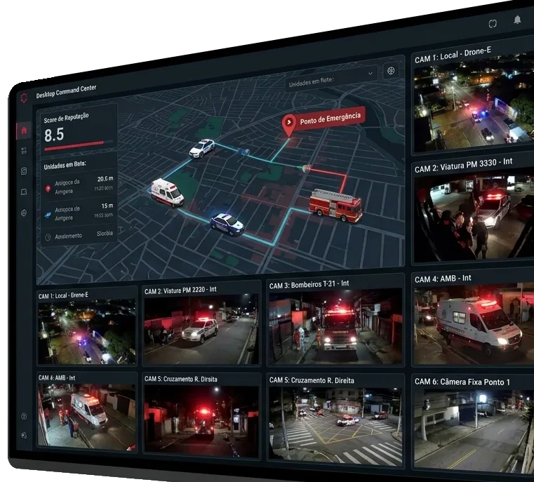

Polícia Militar · Bombeiros · SAMU PM · Bombeiros · SAMU
O socorro chega
no endereço certo.
E sem perder tempo com trote. O cidadão pede ajuda em dois toques, a localização chega exata e a central recebe só pedidos verificados.
- Gratuito para o cidadão
- Dados protegidos pela LGPD
- Universidade de Vassouras
O problema
O trote ocupa a linha e tira a viatura da rua
- 130 mil trotes ao 190 no Rio de Janeiro em 2025, média de 360 por dia PMERJ, jan/2026
- +10% das ligações ao 190 no estado são trote PMERJ, 2022
- R$ 1 bi por ano é o prejuízo estimado com trotes no Brasil Senado Federal, 2015
- −89% de trotes no SAMU-DF desde 2021, com campanhas SES-DF, 2025
O caso do DF mostra que reduzir trote é possível.
Ver as fontesA solução
Triagem inteligente desde o primeiro toque
Cada pedido passa por uma checagem antes de chegar à central.
| Hoje, por ligação | Com o Vigência |
|---|---|
| Endereço passado por voz | Localização exata por GPS |
| Só áudio, sem verificação | Foto, vídeo e áudio na hora |
| Triagem longa por telefone | Pedido em dois toques |
| Anonimato que facilita o trote | Identidade verificada e reputação |
Cada camada é uma etapa de verificação
Todas levam ao mesmo ponto: o lugar exato de quem pediu ajuda.
- Identidade verificada
- Localização exata
- Foto, vídeo e áudio
- Reputação do usuário
- Análise da central
No app do cidadão
Pedir ajuda leva dois toques
-
Acionamento em dois toques
Sem telefonar e sem esperar a linha desocupar.
-
Localização exata
O celular envia o endereço sozinho, sem erro de relato.
-
Foto, vídeo e áudio
A central vê o que acontece antes de enviar a equipe.
-
Identidade verificada
Login e reputação ajudam a separar o trote do pedido real.
-
Sigilo tático
Você acompanha o status. A posição da viatura fica protegida.
-
O status do pedido
- Pedido verificado
- Emergência
Gratuito para o cidadão · Dados protegidos pela LGPD
Na central
Painel tático
O painel é a tela da central. Ele mostra só os pedidos que passaram na triagem e atualiza as informações em tempo real, para a equipe decidir rápido.
- Só chamados verificados. Trotes e chamadas mudas são filtrados antes de chegar à central, e as linhas ficam livres para emergências reais.
- Visão em tempo real. Cada ocorrência aparece com tipo, localização por GPS e status atualizado a cada segundo.
- Equipe e tempo de resposta. O painel mostra qual equipe foi acionada e há quanto tempo, o que ajuda no despacho e no acompanhamento.
- Priorização por gravidade. Os casos mais críticos sobem na lista para serem atendidos primeiro.

Para órgãos públicos
Trabalha junto com o 190, o 192 e o 193
O Vigência confirma quem está pedindo ajuda e entrega à central um chamado verificado, com localização exata e imagens.
Quem contrata
A Prefeitura, pela Secretaria de Segurança e Ordem Pública. PM e Bombeiros são do estado e entram por convênio.
Quem usa
O cidadão, de graça, pelo celular.
Como começar
Um piloto em parceria com a Universidade de Vassouras, sem custo para a Prefeitura e sem licitação.
- Diferencial 1PM, Bombeiros e SAMU em um só app
- Diferencial 2Verificação de identidade de quem pede ajuda
- Diferencial 3Reputação do usuário contra trotes
Segurança e privacidade
Seus dados protegidos em cada etapa
O Vigência foi projetado de acordo com a LGPD (Lei nº 13.709/2018).
-
Você autoriza e pode revogar
Localização, câmera e microfone só com a sua permissão.
-
Dados criptografados
No envio e no armazenamento.
-
Disponível 24 horas
Meta de 99,9% de disponibilidade.
-
O 190, o 192 e o 193 continuam
O Vigência trabalha junto com as centrais.
Equipe
Quem faz o Vigência
Engenharia de Software · Universidade de Vassouras, Campus Saquarema.
- OrientadorProf. André Saraiva
- IdealizadorGabriel Ascari
- Gerente de projetoAlanderson Macedo
- Engenharia e desenvolvimentoChristiano Monteiro
- Engenharia e desenvolvimentoIngrid Macedo
- Engenharia e desenvolvimentoJosé Ramiram
- Engenharia e desenvolvimentoLucas Sant'Anna
- Engenharia e desenvolvimentoMarcelo Bahiense
- Engenharia e desenvolvimentoMário Assis
- Engenharia e desenvolvimentoPriscila da Hora Barbosa
Fale com a equipe
Quer levar o Vigência para a sua cidade?
Conte para a gente qual órgão você representa. O piloto começa por uma parceria com a universidade.